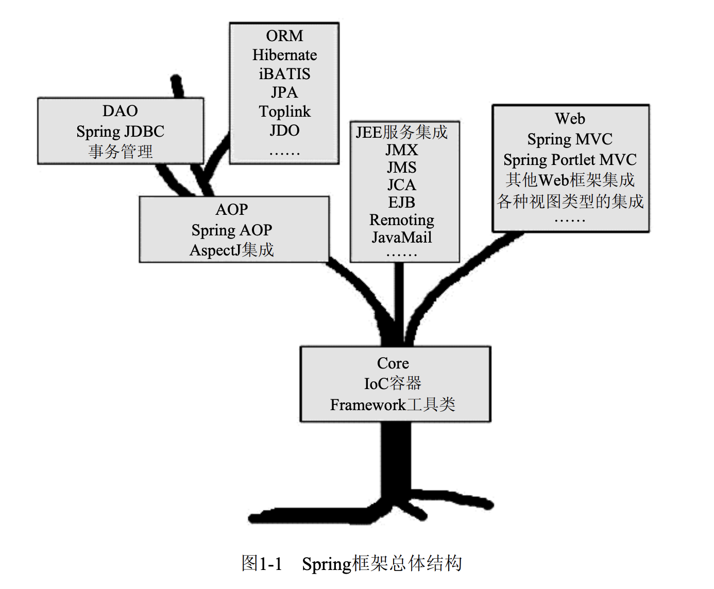
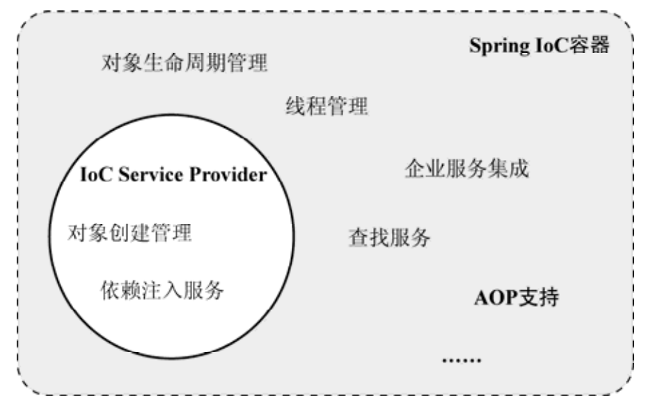
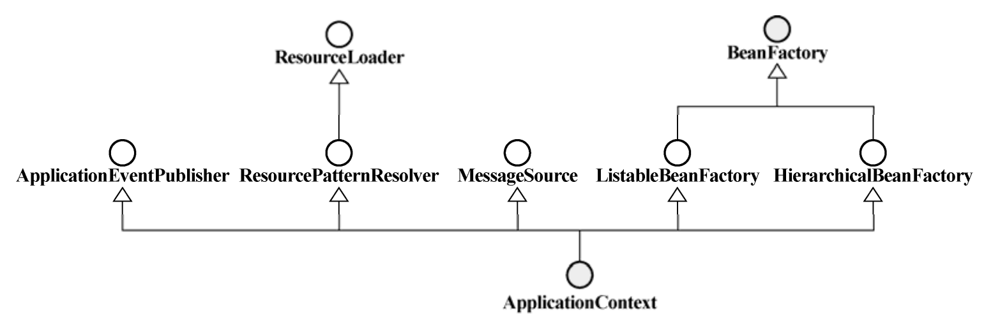

从广义上讲，不管 Spring 框架自发布到现在经过多少次迭代，其本质是始终不变的，都是为了提供各种服务，以帮助我们简化基于 POJO 的 Java 应用程序开发。
Spring 框架为 POJO 提供的各种服务组成的生命树如下

Spring Core 是基础，提供了 IoC 容器的实现，帮助我们通过依赖注入方式管理对象之间的依赖关系。AOP 采用 Proxy 模式构建，结合 IoC, 增强 POJO 能力。
在 Core 和 AOP 的基础上，提供数据库和事物的服务， Spring 中的事务管理抽象层是 AOP 的最佳实践。
为了简化 Java EE 的各种服务，Spring 还提供了对应的简化服务，怎对 Web 开发，提供了对应的 Web MVC。
IoC
IoC(Inverse of Control) 控制反转，也有人叫做依赖注入(DI - Dependency Injection). 不过 Spring 的创始人说这两个是不同的概念， DI 是 IoC 的一种表现形式，这里不纠结这么多。为了便于理解，从书上抄一段代码如下
1 | public class FXNewsProvider { |
上面的类中为了提供 getAndPersistNews() 这个功能，需要调用内部两个接口的方法。传统做法中，为了拿到接口的实例我们会写类似如下的代码
1 | public FXNewsProvider () { |
这种方式中，我们通过新建接口示例拿到对象并提供服务。但是细想一下，其实我们并不需要知道接口的具体实现，我们想要的只是，当我们想要用借口的服务时，有对应的实例能调用方法即可，至于示例的表现形式我们根本不 care。
PS: 这种做法的中二表现形式 - 神说，要有光！然后他就有了。
Spring 提供了 IoC Service Provider, 充当你的管家，他可以帮你管理实例，你只需要调用方法即可，不需要你管理 bean。将这个 bean 的控制权托管给 IoC Service, 这就是控制反转。
但是 IoC Service Provider 并不会读心术，当你给出上面的代码的时候，他并不知道去那里帮你找来接口的实例。这里就引入了一些规范，我们可以通过三种方式达到依赖注入的效果
- 构造方式注入 - constructor injection
- setter 方法注入 - setter injection
- 接口注入 - interface injection，过时了，了解即可
一句话概括 IoC 可以带给我们什么：IoC 是一种可以帮助我们解偶各业务对象间依赖关系的对象绑定方式。
IoC 是一种策略，而 IoC Service Provider 就是这个策略的实施者。Spring 的 IoC 容器就是一个提供以来注入服务的 IoC Service Provider。
IoC Service Provider 职责就两个：
- 业务对象的构建管理：将构建逻辑从客户端剥离，避免污染业务逻辑
- 业务对象间的依赖绑定：最艰巨也是最重要的任务，正确的匹配对象之间的依赖
IoC Service Provider 产品使用的注册对象管理信息方式主要有
- 直接编码方式
- 配置文件方式：properies, xml 等
- 元数据方式：注解
Spring 的 IoC 容器是一个超集，IoC Service Provider 只是其中的一部分，除此之外，他还提供了对象生命周期管理，API 等很多功能。

Spring 提供了两种容器类型
- BeanFactory: 基础类型的 IoC 容器，提供完整的 IoC 服务支持，采用 lazy-load。
- ApplicationContext: 构建与 BeanFactory 之上，提供其他一些高级特性，比如 event，i18n 等。

BeanFactory 顾名思义就是一个工厂，你提供原料然后他给你成品，至于中间过程，作为用户，你并不需要知道，这是框架的职责范围。
问题
Q: Spring 的 容器 怎么体现的
A: 容器即装东西的地方，项目中的 Bean 都是通过他保管的(存在 map 中)，所以还是很贴切的